展开阅读目录
PANGEA Desktop 新手使用指南
从准备源码开始，完成一次分析，读懂流程与风险，筛选并导出可用的测试用例。
适用环境：Windows x64。操作文字按 Desktop 2d25e7f、工作台插件 79175f1、分析引擎 58e3be1 核对，日期为 2026 年 10 月 22 日。现有界面配图来自较早的组件基线，使用时以正文步骤和自己安装包的组件清单为准。完整提交与核对方法见版本与资料依据。
PANGEA Desktop 是一个面向源码分析与测试设计的工作台。你提供源码、分析目标和可选的需求等资料，它组织分析与复核，并把业务流程、风险、测试用例和报告放在同一项任务里。
第一次使用，建议选择一个你熟悉的小模块，采用“模块分析”，先走通下面的流程。
首次使用可按正文顺序操作；已有任务时，可直接查阅真实案例中的结果判断、源码更新后重新分析或按现象排查问题。范围选择中的目录示例用于解释怎样划定工作边界，真实案例中的产物用于练习怎样做测试判断。
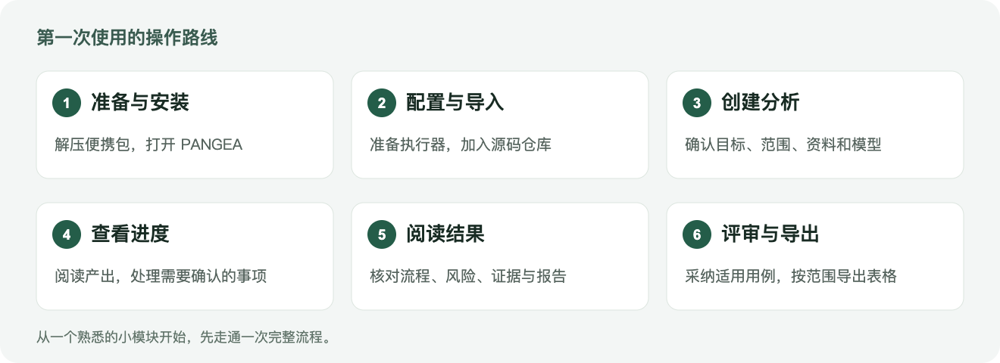
配图说明：图 1–17 是 Desktop
a23cd31、工作台7cc5179、引擎7aa7abc基线的界面样例，展示隔离的示例任务和模型数据；窗口外框为演示环境。它们用于帮助辨认页面位置，目标类型、范围和导出选项按本版文字操作。图 18–19 来自随包的真实历史产物阅读页，保留原记录与冻结源码节选，并单独标明评审建议。
开始前准备什么
| 准备项 | 你需要做什么 |
|---|---|
| Windows x64 电脑 | 准备一个可写目录，用于解压程序；为源码副本和分析结果预留空间。 |
| PANGEA Desktop 完整便携包 | 从团队的软件交付位置获取配套版本的 ZIP。首次安装使用完整包。 |
| 待分析的源码 | 准备一个本机源码目录。普通目录也可以使用；有 Git 历史的仓库会连同历史一起复制。 |
| 分析执行器和模型账号 | 本文完整演示 OpenCode 的安装、登录与验证。准备一个获准使用的模型服务账号或 API Key；已有 NGA / CodeAgent 部署的用户可沿用已有执行器。 |
| 明确的分析目标 | 例如“TLS 握手与失败清理”，并知道相关代码所在的目录。 |
| 需求等补充资料 | 可选。首次模块分析可以只使用源码；覆盖率分析需要可用的覆盖率输入。 |
便携包已包含 PANGEA 工作台和 Python 运行环境。安装后的分析仍需要能够访问所选执行器的模型服务。
安装并打开工作台
- 将完整 ZIP 解压到可写目录，例如
D:\Apps\PANGEA Desktop。 - 打开解压后的目录，双击 PANGEA Desktop.exe。
- 等待工作台加载。首次使用时，按照页面引导加入源码仓库；已经初始化的工作区会进入工作台。
若出现 配置模型与 API 引导，可以点击 打开模型与 API 设置。已经准备好外部 Agent、暂时只做源码分析时，也可以选择 稍后配置，先加入源码。
本指南对应的 Windows 便携版将源码副本、任务和报告放在程序目录下的 launch-root\pangea-data。例如上述安装位置对应 D:\Apps\PANGEA Desktop\launch-root\pangea-data。%APPDATA%\pangea-desktop 还保存应用配置和升级记录。保留数据时需要同时考虑这两处；开发模式或专用测试入口的工作区可能另有位置。
先认识几个入口
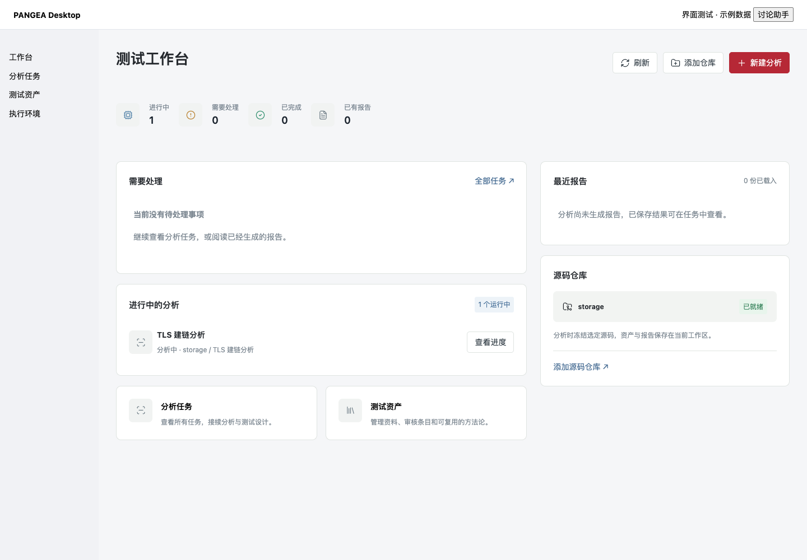
| 入口 | 用来做什么 |
|---|---|
| 工作台 | 添加仓库、新建分析、查看当前进度和需要你处理的事项。 |
| 分析任务 | 找到某次分析，查看它的运行记录、结果和报告。 |
| 测试资产 | 导入需求、设计、历史缺陷、参考资料和覆盖率等材料。这里的“资产”就是可以用于分析的资料。 |
| 执行环境 | 管理实际执行用例所需的环境。第一次完成源码分析时可以先跳过。 |
| 设置 | 查看分析执行器入口，配置讨论助手模型，导入升级包。 |
界面中的 Run 表示一次具体的分析运行。阅读历史结果时，先确认当前任务名称、仓库和运行记录，避免把不同版本的结果混在一起。
配好分析执行器和讨论助手
打开 设置，可以看到“分析执行器”和“讨论助手模型”两组入口。
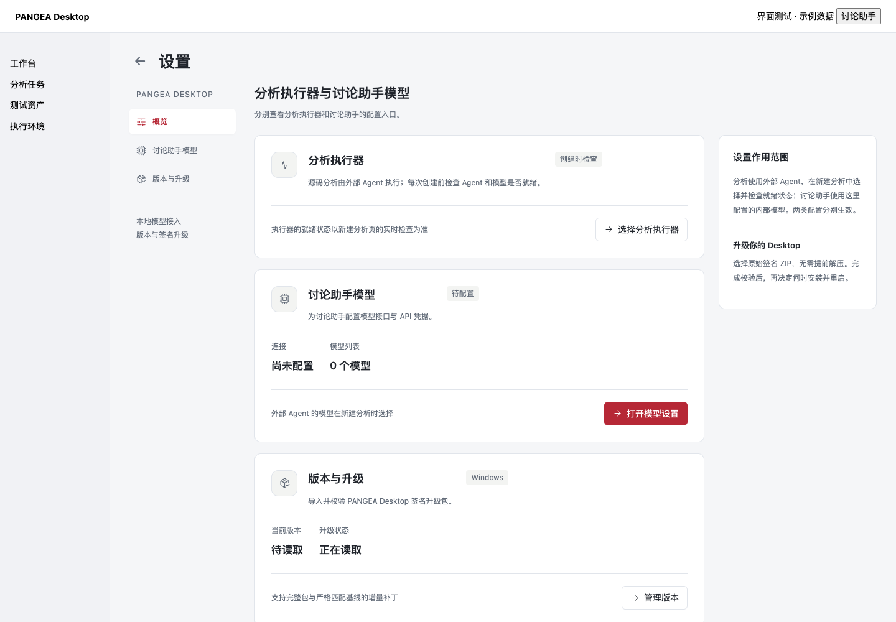
分析执行器
分析执行器是实际读取源码、完成分析与复核的外部 Agent。当前支持 NGA、CodeAgent、OpenCode。
下面以 OpenCode 1.18.4 的 Windows 原生安装为例。它适合能安装命令行工具、且有模型服务访问权限的电脑。已部署 NGA 或 CodeAgent 的用户可直接在 新建分析 → 执行设置 选择已有执行器，并完成下表的模型确认与首个任务检查。
安装并确认命令可用
- 从 Node.js 官方下载页安装 Windows x64 的 LTS 安装程序，保留 npm 组件和命令环境配置。npm 是安装 OpenCode 所用的软件包工具。
- 打开一个新的 Windows PowerShell，依次执行：
node --version
npm.cmd --version
npm.cmd install -g opencode-ai@1.18.4
前两条应显示版本号；安装命令成功结束后，重新打开 PowerShell，检查：
Get-Command -CommandType Application opencode
opencode.cmd --version
opencode.cmd acp --help
应分别看到命令路径、1.18.4 和 acp 帮助。ACP 是 PANGEA 与执行器通信的接口。本文选用 npm 安装的 .cmd 入口，可避开 PowerShell 对 .ps1 脚本的策略限制。仅在 WSL 中安装 OpenCode，不代表 Windows 程序能找到它。
这条路线依据 OpenCode 官方安装说明与 ACP 接口说明。后续换用其他版本时，重新检查命令、模型和实际请求；OpenCode 1 与 2 共用命令名，安装前先确认已有版本。
登录并验证一次模型请求
在 PowerShell 中执行：
opencode.cmd auth login
在交互列表里选择你已获准使用的模型供应商，完成浏览器登录或输入该供应商的 API Key。凭据填在 OpenCode 的登录流程中。随后执行：
opencode.cmd models
从结果中复制一个完整的 供应商/模型 ID。模型出现在目录里，仍需通过一次实际请求确认账号权限和网络。先在资源管理器中新建一个空文件夹，例如 D:\PangeaConnectionCheck，进入该文件夹，在地址栏输入 powershell 并回车，再执行下列命令，将 供应商/模型 替换为刚才复制的值：
opencode.cmd run -m "供应商/模型" "请只回复 PANGEA_READY，不读取或修改文件，不调用工具。"
收到 PANGEA_READY 或相应简短回复，说明这个账号和模型此时可以完成请求。若失败，先按模型与网络问题定位，再进入任务创建。登录、模型列表和单次请求的命令说明见 OpenCode CLI 文档。
企业自定义网关： 先向账号管理员取得 API 协议、完整接口地址、模型 ID、本人凭据。全局配置默认位于 %USERPROFILE%\.config\opencode\opencode.json；若组织另设配置位置，以其配置为准。按自定义供应商说明添加供应商，凭据中的供应商 ID 必须与配置中的 ID 一致。配置为全局后，Desktop 的分析目录才能读取同一连接；随后仍执行上述模型列表和短请求检查。
代理和企业证书按 OpenCode 网络配置设置。让启动 Desktop 的进程继承这些配置；另一个 PowerShell 窗口里的临时设置不会自动传给已运行的 Desktop。
在 PANGEA 中确认接入
- 重新打开 PANGEA Desktop。先按后文完成源码导入及创建向导的前两步，再到第三步 执行设置 → 外部 Agent 选择 OpenCode。
- 点击 刷新模型，选择刚才测试过的模型，确认页面显示 已确认模型：具体模型 ID。
- 完成后文的小范围分析创建，在 执行详情与 Agent 会话 中确认有新消息、工具活动和阶段产物。
若 Desktop 找不到执行器，打开 Agent Runtime → 高级启动设置与诊断，核对 绝对路径 和 命令解析。需要自定义路径时，将 Get-Command 查到的 .exe 或 .cmd 路径填入 启动命令，**启动参数（每行一个）**填 acp。点击 保存配置；在没有运行中的分析时，按提示 立即重启 Harness，再刷新模型。Harness 是承载分析的后台进程。启动命令不要填成 npm 的 .ps1 文件。
| 看到的信号 | 到了哪一步 |
|---|---|
| 运行时已加载、检查运行时通过 | 命令和执行器注册可用；登录与模型请求仍需检查。 |
| 模型列表有值、已确认具体模型 | PANGEA 已取得该执行器的模型目录。 |
| 同模型短请求有回复 | 当前账号、网络与模型能完成一次请求。 |
| 首个任务产生会话消息和阶段产物 | PANGEA 到执行器的分析链路已经开始工作；完成后仍需阅读结果。 |
讨论助手模型
讨论助手用于围绕当前结果提问，例如解释风险依据、讨论测试步骤。
- 打开 设置 → 讨论助手模型。
- 首次配置时点击 连接模型接口；已有连接时可点击 打开模型设置。
- 按团队提供的信息填写 提供方 ID、接口地址、API 协议、API 密钥。API 密钥是模型服务提供的访问凭据。
- 点击 查询可用模型，或通过 添加一行填写服务提供方给出的模型 ID。核对模型列表后点击 创建连接，并按界面选择可用的默认模型。
- 重新打开设置，确认连接仍在。完成后文的任务创建后，在任务页点击 AI 助手，发送一条简短消息，确认服务可以回复。
内部 API 模型也可用于资料提取。源码分析则在创建任务时使用外部 Agent；只配置讨论助手的 API，不等于已完成分析执行器的准备。
把源码加入 PANGEA
第一次打开时，在欢迎页点击 选择文件夹，选择源码目录，核对 仓库名称，再点击 完成初始化。
已经进入工作台后，使用右上角 添加仓库。也可以在新建分析的“源码仓库”旁点击 添加。
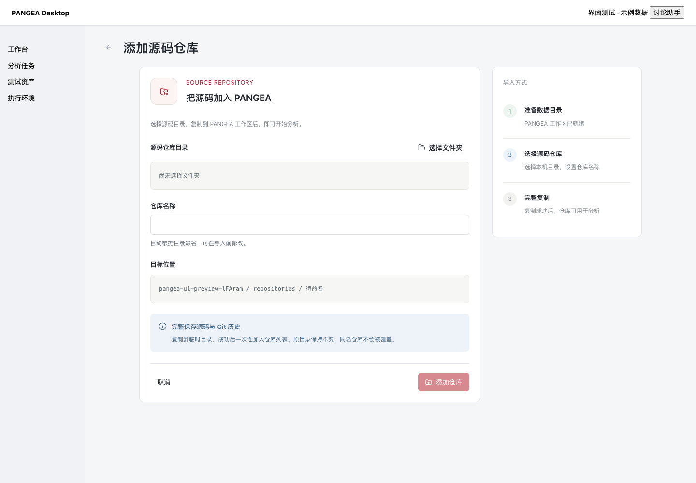
- 选择源码所在的文件夹，例如
D:\Code\storage。 - 核对自动填写的仓库名称，可在导入前修改。
- 点击 添加仓库，等待完整复制结束。
- 确认该仓库出现在工作台或新建分析的仓库列表中。
导入会创建独立的源码副本，原目录保持不变；已有同名仓库不会被覆盖。复制期间保持窗口打开，等仓库正式出现在列表后再开始分析。
后续分析使用 PANGEA 工作区里的源码副本。原目录更新后，按源码更新后重新分析重新导入并核对版本，再开始新任务。
创建第一次分析
点击 新建分析。创建向导依次包含 分析目标、输入资料、执行设置、确认创建 四步。
本节用一个示例贯穿操作：源码仓库为 storage，分析目标为“TLS 建链分析”，关注握手与失败清理行为，源码范围为仓库内的 tls/。操作时请替换成自己的仓库、目标和路径。
第一步明确目标和源码范围
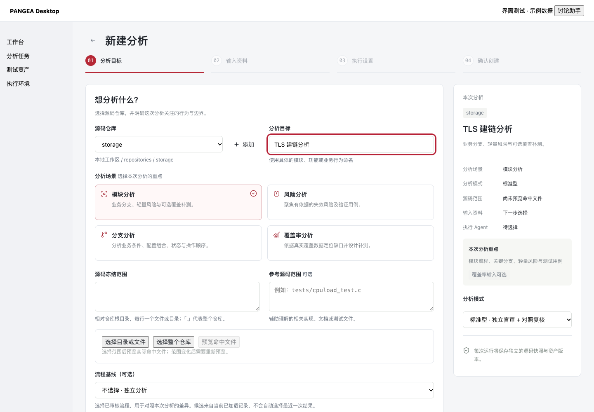
- 在 源码仓库 中选择已导入的仓库。
- 填写 分析目标。使用具体的模块或业务行为名称，例如“TLS 握手与失败清理”。
- 在 分析目标类型 中明确选择 产品行为 或 接口契约。选择会随本次分析保存。
- 选择 模块分析，先完成一次综合分析；在 分析模式 中选择适合本次任务的模式。首次可以采用 标准型。
| 分析目标类型 | 怎样选择 |
|---|---|
| 产品行为 | 围绕产品支持的入口、实际操作和外部结果设计用例，例如建立连接、拒绝无效密钥、失败后重新操作。 |
| 接口契约 | 围绕公开 API 的输入、调用顺序、状态、返回和资源责任设计用例，例如接口调用与资源释放约定。 |
目标类型由你选择，不根据“库”或“驱动”等名称自动判断。产品行为沿用可实施黑盒与灰盒至少 70% 的交付目标；接口契约和风险场景不设这项比例目标。两者都要如实说明执行入口、现有工具及待补设施，具备执行条件仍不表示已经实测通过。历史 Run 按当时保存的目标和规则阅读。
四种场景的区别如下。
| 分析场景 | 适合的目标 |
|---|---|
| 模块分析 | 了解一个模块的流程、关键分支、轻量风险，并设计测试用例。 |
| 风险分析 | 聚焦有源码依据的失效风险、触发条件和验证用例。 |
| 分支分析 | 梳理业务条件、配置组合、状态变化和操作顺序，补齐相关用例。 |
| 覆盖率分析 | 结合真实覆盖数据，定位缺口并设计补充测试；必须提供可用的覆盖率输入。 |
标准型包含独立盲审和对照复核：先独立检查，再比较结果和分歧。速度型由审核者直接检查已有结果，跳过盲审。两种模式都会保留各自的复核信息，实际耗时取决于源码规模和模型执行情况。
接下来，明确本次要分析哪些源码。
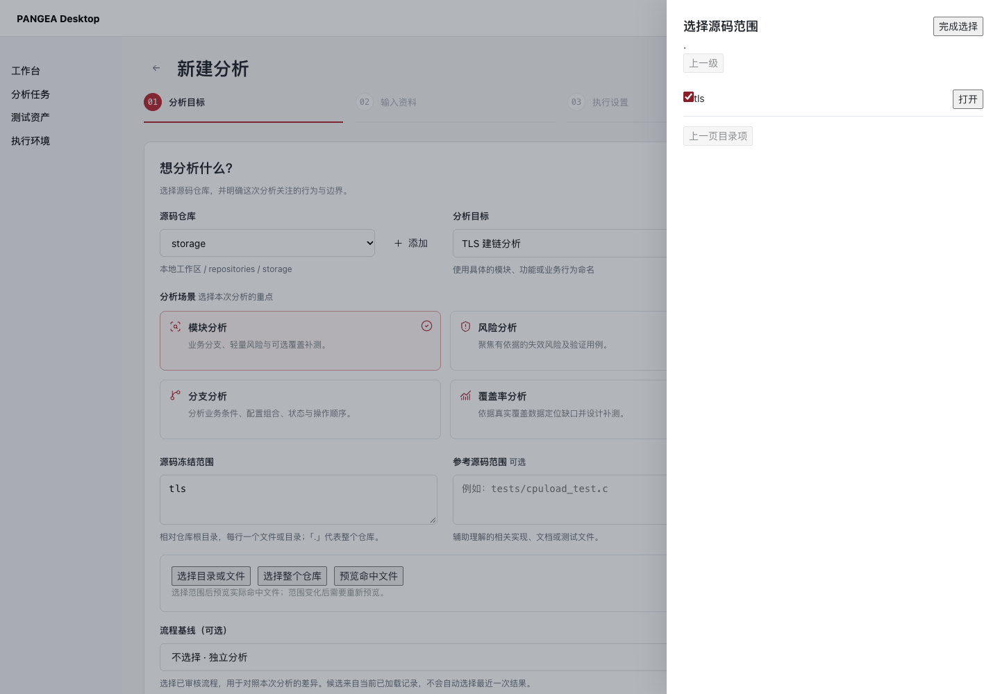
tls 目录。- 点击 选择目录或文件，勾选目标目录或文件，再点击 完成选择。也可以在 源码冻结范围 中填写相对仓库根目录的路径，每行一个。
- 如果确实要分析整个仓库，点击 选择整个仓库。界面会用
.表示仓库根目录。 - 点击 预览命中文件，核对实际文件清单和数量。
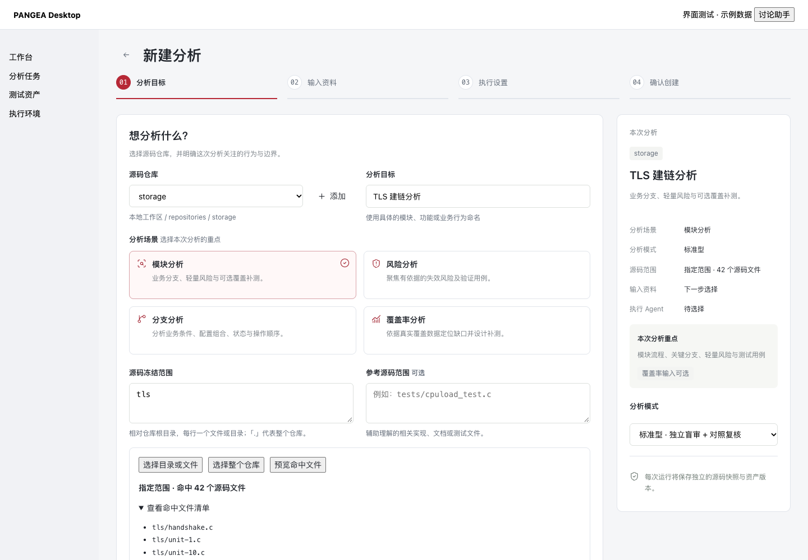
文件清单符合目标后再继续。 范围为空、预览失败或命中数为 0 时，不能进入后续步骤。修改范围后需要重新预览；若创建时提示文件集合变化，也应重新核对。
源码冻结范围是本次可读取的源码边界。分析会围绕你填写的目标组织主干和跨文件流程，不因选择目录就逐个文件承担全量分析。把判断目标行为所必需的入口、接口、状态和清理实现纳入范围；入口或调用方超出边界时，结果应说明证据缺口。
用目录判断应冻结哪些源码
下面是用于讲解职责的目录示例，文件名请替换成自己的工程路径：
storage/
├─ tls/
│ ├─ handshake.c 握手状态推进和失败出口
│ └─ key.c 密钥解析与校验
├─ common/
│ └─ transport.c 连接关闭、资源释放和重新建链
├─ include/
│ └─ tls.h 对外接口和返回值约定
├─ tests/
│ └─ tls_test.c 已有测试
└─ docs/
└─ tls-requirements.md 需求与行为约束
目标是“TLS 握手与失败清理”时，先回答一个问题：如果 common/transport.c 的关闭或释放行为写错，本次分析是否应该发现？ 如果答案是“应该”，就把它纳入源码冻结范围。
本例源码冻结范围可填写：
tls/
common/transport.c
include/tls.h
tests/tls_test.c
接口声明用于判断调用是否合法；已有测试可以帮助理解测试驱动和现有执行设施。需求文档通过下一步的 输入资料 选择。若目标只是“密钥解析是否正确”，可围绕 tls/key.c、必要接口及其调用关系选择范围；如果还要检查连接释放，就需要纳入负责释放的实现。公共模块是否需要冻结，取决于判断目标行为所需的证据。
点击 预览命中文件 后，按职责核对四件事：入口文件是否在内、关键状态判断是否在内、成功和失败出口是否在内、清理责任是否落到具体实现。预览的 42 是配图中的示例数量，只表示筛选命中，不能证明范围完整。当前预览统计范围中支持的 C/C++ 或 Lua 源码，实际输入以本次冻结清单为准。
点击 下一步 · 输入资料。
第二步选择输入资料
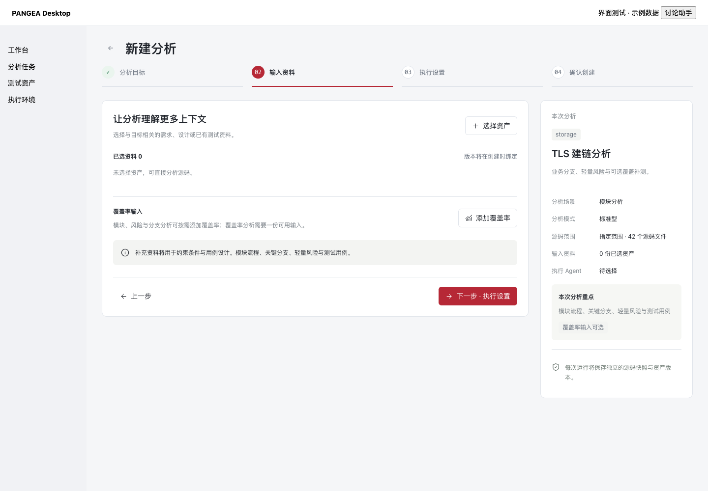
已有需求、设计或历史缺陷资料时，点击 选择资产，选择与本次目标相关且可用的资产，核对标题和版本。
第一次做模块分析，没有补充资料也可以直接点击 下一步 · 执行设置。如果需要先导入材料，按后文“补充需求和历史缺陷资料”操作。
覆盖率分析需要点击 添加覆盖率，按当前环境选择平台查询、本地覆盖率文件或已有覆盖率资产。查询成功表示取到了数据，是否匹配本次源码会在运行中核验。
第三步选择执行器和模型
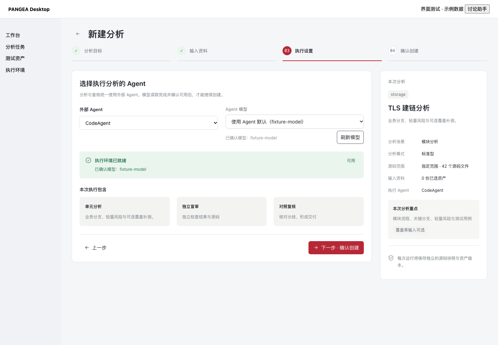
- 在 外部 Agent 中选择本机已配置的 NGA、CodeAgent 或 OpenCode。
- 等待 Agent 模型 列表读取完成。必要时点击 刷新模型。
- 选择所需模型；使用 Agent 默认模型时，也需要成功确认其具体模型。
- 看到 执行环境已就绪 后，点击 下一步 · 确认创建。
若列表读取失败、没有可用模型或所选模型失效，先处理页面提示再继续。切换执行器后，应重新检查该执行器的模型。
第四步确认并开始
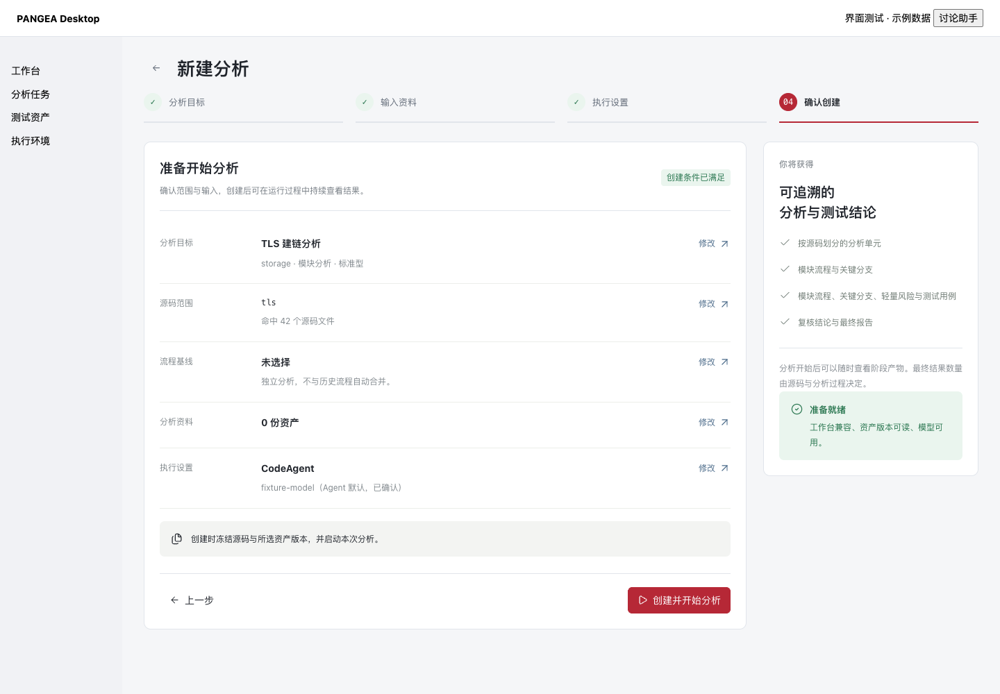
逐项确认：
- 仓库、目标及产品行为/接口契约类型是否正确。
- 源码范围与命中文件数是否符合预期。
- 是否选中了本次需要的资料。
- 执行器和具体模型是否正确。
需要调整时，点击对应行的 修改。确认无误后，点击 创建并开始分析。
创建时会保存本次源码快照和所选资产版本。“快照”就是本次分析使用的固定内容，方便以后核对结果依据。修改原始材料后，新的分析任务才能使用更新后的输入。
查看进度和处理待办
任务开始后，进入 运行过程。重点看当前阶段、已经保存的产出和需要处理的事项。
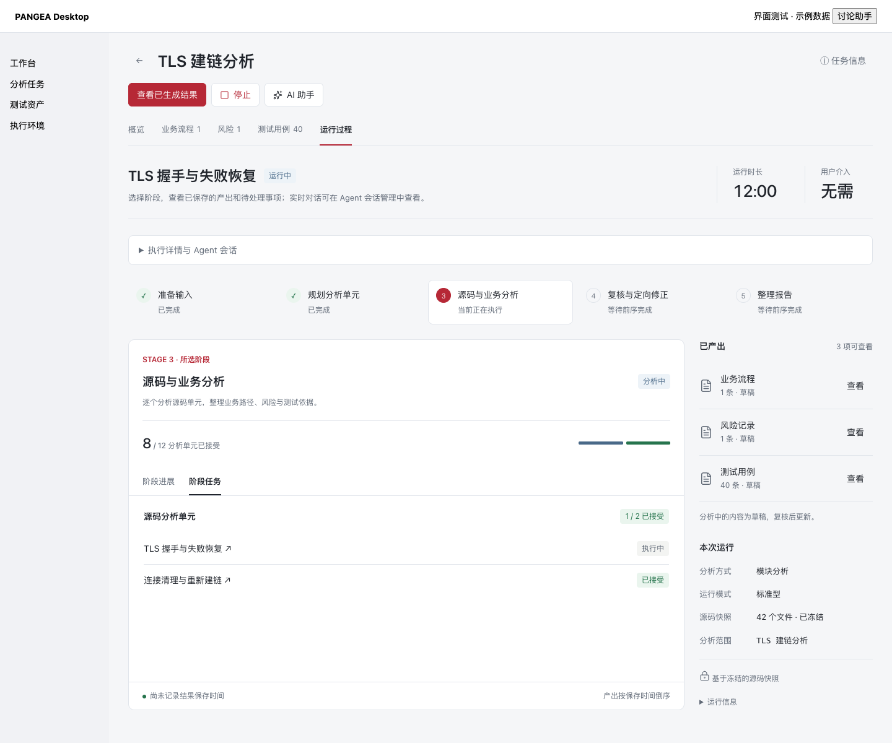
需要查看具体执行消息时，展开 执行详情与 Agent 会话，点击 Agent 会话管理。在会话中核对报错、工具输出和最近进展。
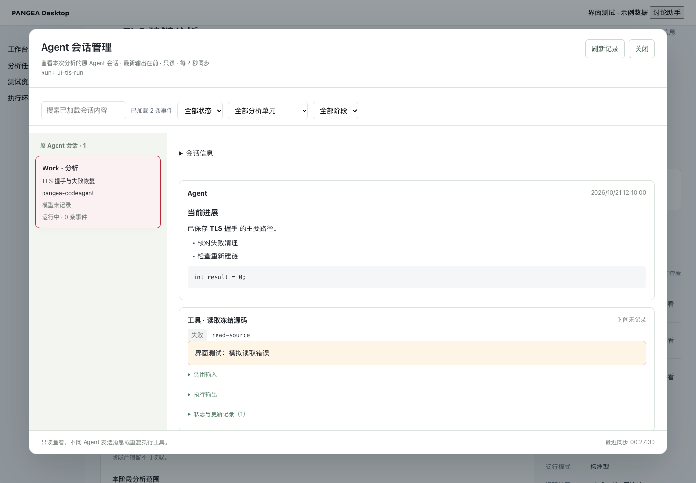
| 页面状态或提示 | 接下来怎么做 |
|---|---|
| 正在运行 | 阅读阶段产出或继续其他工作，留意最新活动和页面提示。 |
| 需要处理、等待修正 | 阅读原因，按页面提供的入口选择“继续修正”或“交付已有结果”。 |
| 启动失败或分析失败 | 查看失败原因和对应会话，按后文对应现象排查。旧工具结束状态未确认时，先保留原 Run 并完成结束确认。需要更换源码范围或输入资料时，新建分析。 |
| 正在停止 | 等待停止结果确认。 |
| 已停止 | 查看已有产物；页面允许恢复时，可点击“继续分析”。 |
| 已完成或已有交付 | 进入结果概览和报告，核对交付范围、质量结论与待处理事项。 |
要主动停止时，使用页面的 停止 并完成确认。要保留已完成部分结束当前修正时，使用 交付已有结果，并继续阅读报告中的未解决项。
流程结束与问题全部解决是两个不同状态。 部分交付会保留已经完成的结果，也会明确记录未完成修正和 UNRESOLVED，即仍未解决的事项。
读懂结果和业务流程
先看结果概览
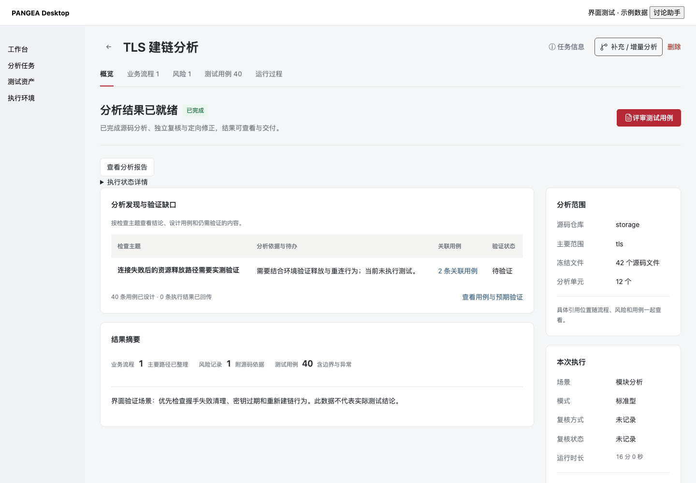
建议按以下顺序阅读：
- 确认任务和范围：检查仓库、目标，以及本次运行记录。
- 查看发现与待办：先阅读未解决事项、风险与验证缺口。
- 查看业务流程：理解模块的正常路径、异常路径和关键分支。
- 核对风险和证据：把结论与对应的源码或资料联系起来。
- 阅读测试用例和报告：确定后续要采用的测试内容，以及交付中保留的限制。
页面若提示读取失败或结果不可信，先处理该提示。此时空列表不能被理解成“没有风险”或“没有用例”。
用图表理解代码行为
进入 业务流程，先展开 模块总览 · 当前 Run。按分析单元查看已有流程的类别和关系、入口、主干路径、调用入口及显式调用关系，点击流程名称进入对应内容。需要核对依据时，打开 查看流程证据 ↗。关系未声明或证据不足时保留“未声明”等提示；分组清单本身不证明流程完整，也不会补造跨单元连线。
再根据当前流程已有产物选择图表。
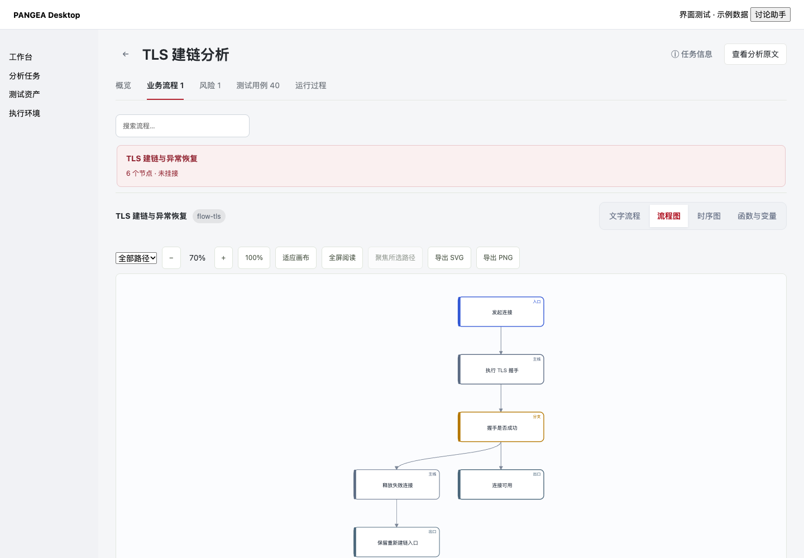
| 图表 | 主要回答什么问题 |
|---|---|
| 流程图 | 业务从哪里开始，经过哪些判断，成功或失败后走向哪里。 |
| 时序图 | 不同参与方按什么先后顺序交互。 |
| 函数与变量 | 查看函数、宏及外部函数之间的调用，以及变量的读取、计算和写入。 |
在 函数与变量 中选择函数节点，再点击带仓库、路径和行号的源码位置，预览当前 Run 保存的源码。缺少位置、行号或仓库不属于当前 Run 时，先核对记录与页面提示；不要拿工作区里已更新的文件替代当时的依据。
阅读较大的图时，可使用全屏入口；按 Esc 退出全屏。普通滚轮用于阅读，Ctrl＋滚轮用于缩放。流程图提供 高亮路径 和 聚焦所选路径，方便单独查看关注的路径。
还可以切换到 文字流程，按节点和分支逐项阅读。分支很多时，在 分支与异常 中使用搜索、筛选和分页，也可以点击 绘制本页分支，在流程图中查看当前页的分支。某次任务没有生成相应图表时，以该任务实际保存的内容为准。
从风险追到证据
打开风险后，先看触发条件、系统结果和外部可观察的现象，再核对关联证据及用例。证据详情中的源码片段带有行号，可用于定位依据。
如果需要讨论某条结论，可以使用对象详情中的会话入口，把当前对象和相关内容加入讨论草稿。检查草稿、补充问题后再发送。
真实案例中的结果判断
前面的 storage/tls 和 42 个文件用于演示操作。下面使用两次保存的真实分析，练习从流程、证据走到用例决定。两次分析均来自 SPDK 源码提交 97af299e3c76368219f0cddcc710fafd57edcc1c；被分析仓库为 spdk-full。
| 阅读练习 | 原 Run 与完成时间（北京时间） | 原交付状态 |
|---|---|---|
| 连接释放中的并发风险 | nvme-tcp-chap-tls-260825-01，2026-08-25 02:03 |
COMPLETE / PASS |
| 非法密钥的拒绝行为 | nvme-of-dh-hmac-chap-aut-260904-04，2026-09-04 02:10 |
COMPLETE / UNRESOLVED |
它们是历史分析阅读案例，历史引擎的准确 Git 提交未在已保存元数据中记录；当前指南界面版本见文末。以下评审判断来自对原产物与冻结源码的核对，不代表这些测试已经执行。可以打开随包的真实产物与源码节选，查看原始记录、行号和文件校验值。
案例一为什么暂不采纳并发断开的原用例
找到流程。 在第一个 Run 的报告中查找 NVMe/TCP qpair 同步断开与 outstanding_reqs 竞态。这里 qpair 指一条发送命令并接收完成结果的队列连接；outstanding_reqs 是尚未完成的请求队列。流程描述了移除连接、关闭 socket、结束未完成请求，最后确认请求队列为空。
顺着风险追证据。 关联风险 RISK-U00-001 声称：一个线程同步断开时，另一个线程同时处理完成事件，可能令请求队列再次非空，触发断言。断言是代码对内部状态必须满足的条件所做的检查。点击证据后，应阅读完整函数和接口约束，而不只看带有 assert 的一行。
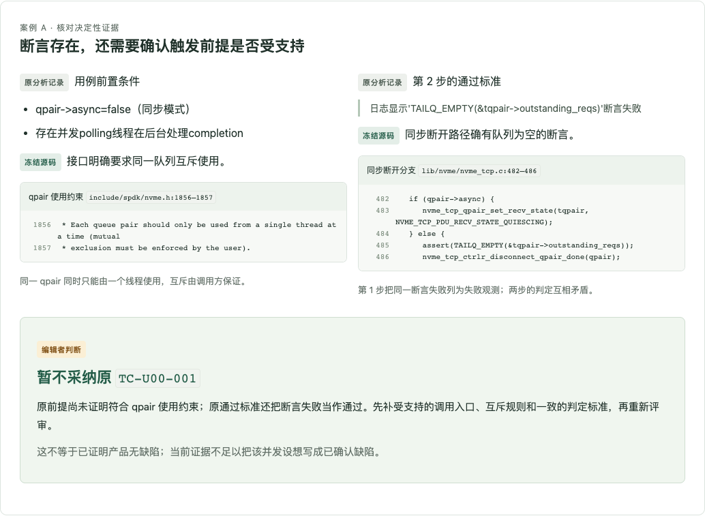
| 核对位置 | 实际看到什么 | 对判断的影响 |
|---|---|---|
lib/nvme/nvme_tcp.c:436–488 |
同步断开函数先清理请求，再断言队列为空。 | 确认存在状态检查；尚未证明受支持的调用会触发失败。 |
include/spdk/nvme.h:1856–1857 |
同一 qpair 同时只能由一个线程使用，调用者负责互斥。 | 原风险依赖的“两线程同时操作同一 qpair”与该接口约束冲突。 |
原用例 TC-U00-001 第 1、2 步 |
第 1 步把断言失败列为失败现象；第 2 步却把出现断言失败日志写成预期结果。 | 同一个现象同时被写成通过与失败，无法直接执行。 |
作出决定。 对原 TC-U00-001 选择 暂不采纳。在团队评审记录中写明两点：并发前提未证明属于受支持路径；通过与失败标准相互矛盾。原步骤还直接使用一个内部函数，测试入口也需要重新确定。查看该例原记录和源码。
这不意味着已经证明连接释放毫无风险。若团队有支持并发使用的外层封装，需要补充封装约束和可达调用路径，再重新评审。可继续设计“所属线程内串行提交和断开”的检查，观察请求是否按约定完成或取消、连接是否关闭、能否重新建立连接；这些是后续设计方向。
这次阅读已经产生了价值：避免将不成立的触发前提、矛盾的通过标准直接交给执行人员。原报告的 PASS 也仍然需要用例评审。
案例二非法密钥被拒绝为何不等于缺陷
第二个 Run 分析的是 DH-HMAC-CHAP 身份认证，即主机与目标端用密钥验证身份的过程。它与 TLS 的通信加密是不同机制，下面的 DHHC-1 格式不属于 TLS 密钥格式。
在 业务流程 / 报告中找到 DH-HMAC-CHAP 密钥转换与 HMAC 计算（F-U00-FLOW-KEY-TRANSFORM），再看场景 DHHC-1 格式密钥解析错误（SCN-U00-001）及用例 非法 DHHC-1 格式 key 导致认证失败并返回错误码（TC-U00-001）。本例用例的风险关联列表为空，它依据代码流程生成。
打开冻结源码 lib/nvme/nvme_auth.c:289–324：格式解析失败会记录 Invalid key format 并返回错误；长度错误和 CRC32 校验不匹配也分别被拒绝。CRC32 是这里用于核对密钥内容是否匹配的校验值。因而“错误密钥被拒绝”符合这条路径的保护目的，可以成为异常输入用例。
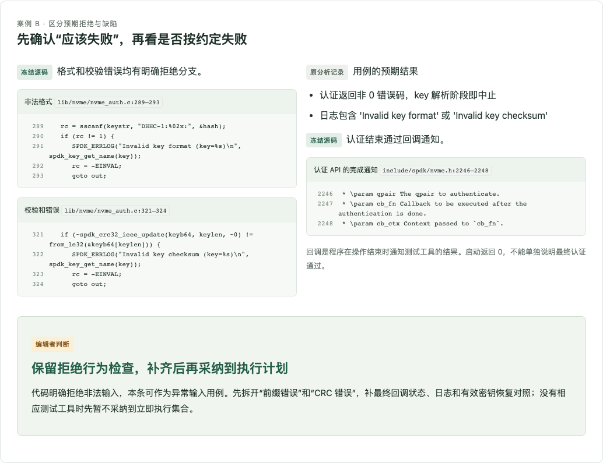
同一报告把 HMAC 校验失败导致连接断开且无自动重试（R-U00-004）列为 High 风险。对应源码确实支持“应答不匹配后拒绝并断开”，但仅凭这一点不能认定为高严重度缺陷。若要把“不自动重试”判成缺陷，还需补充需求依据及恢复失败的实际证据。否则应先把它作为拒绝与恢复行为来验证。查看原分类与源码。
把非法密钥用例补到能执行
原用例仍缺少一个关键观察点：spdk_nvme_qpair_authenticate 返回 0 表示认证已启动，不代表最终成功。冻结接口说明 include/spdk/nvme.h:2246–2248 指定通过完成回调通知结果；nvme_auth.c:1268–1270、1290–1294 展示了启动与回调登记。回调就是程序稍后通知“这次操作结束了”的方式。
| 原用例需要补的内容 | 可执行的完善方式 |
|---|---|
| “非法格式”包含多种原因 | 拆成两条：缺失 DHHC-1 前缀；保留合法前缀、长度和编码，仅使 CRC32 不匹配。使用专用测试密钥。 |
| 缺少正常对照 | 同一身份和环境先用有效测试密钥完成认证，确认最终回调状态为成功。 |
| 没有明确测试入口 | 使用团队已有、能设置测试 keyring 并触发公开认证接口的测试程序。keyring 是程序读取密钥的位置。确认它会持续处理完成事件。 |
| 只看函数立即返回 | 同时记录启动返回值与最终回调。立即返回非零表示启动已失败；返回 0 时继续等待完成通知，不能提前判定“密钥已被接受”。 |
| 通过与失败边界不清 | 通过：异常输入被拒绝并出现相应错误，未得到认证成功。失败：异常输入得到认证成功或程序崩溃。超过观察期限仍无结果时，先记录挂起，排除完成事件未处理或网络不可达。 |
| 恢复动作不完整 | 换回有效测试密钥，按连接状态重新连接或重新认证，确认最终成功。观察期限按测试环境与团队要求设定。 |
采纳条件： 输入能稳定构造，测试入口和最终回调可观测，通过标准与恢复动作都已确认。具备这些条件后，可采纳完善后的用例安排执行；缺少测试程序或观察能力时，先选择 暂不采纳，并在团队评审记录中写出缺项。
当前详情页的采纳按钮保存评审决定。上表是用例完善建议；可导出表格，在团队用例库补齐并复核后交付，不要只改变采纳状态就假定原步骤已经改好。第二个 Run 同时显示 COMPLETE 与 UNRESOLVED，也提醒我们继续阅读未完成范围，而不是将已结束理解为全量验证完成。
评审并导出测试用例
进入 测试用例。可以按 分析单元、用例类型、执行条件、评审状态 筛选，也可以搜索用例名称、业务路径、输入或预期结果。
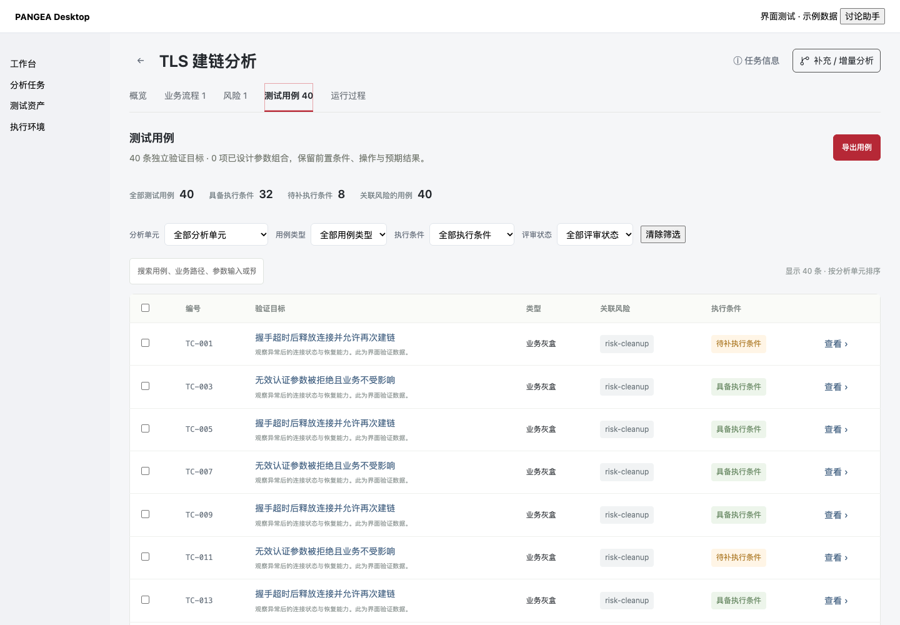
逐条判断是否采用
点击用例标题或 查看 ›，检查前置条件、操作步骤、预期结果、观察点和清理动作。
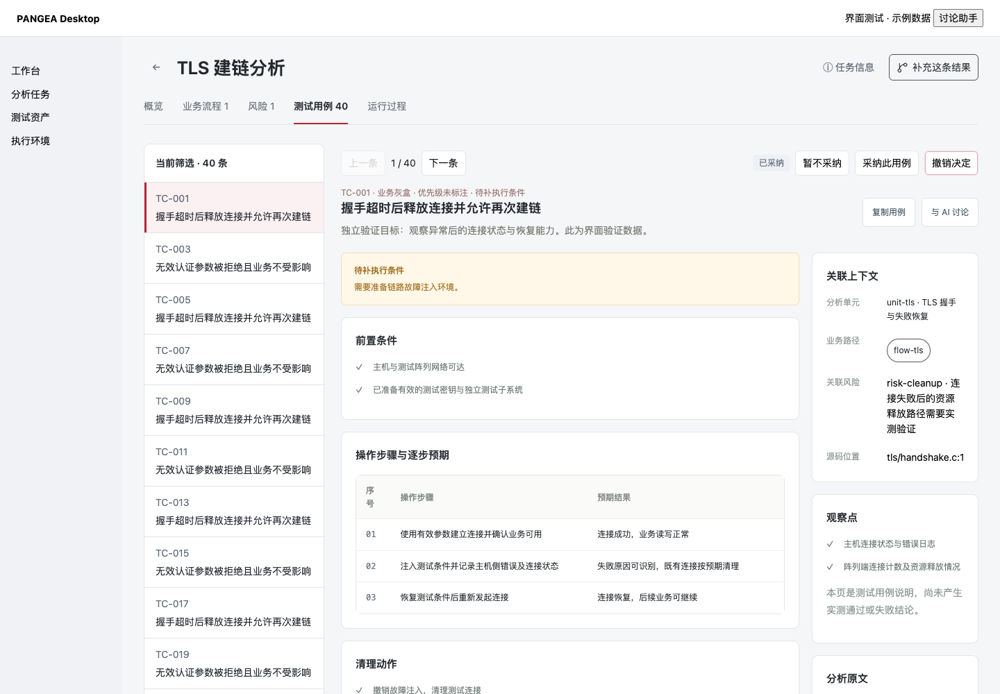
- 适合本次测试工作：点击 采纳此用例。
- 暂时不采用：点击 暂不采纳。
- 需要重新判断：点击 撤销决定。
- 继续阅读：点击 上一条 或 下一条。
确认页面已经显示保存后的评审状态，再继续。用例内容变化后可能需要重新评审，按页面提示重新核对。
三个常见动作各有用途：
| 动作 | 表示什么 |
|---|---|
| 查看 | 打开详情阅读，不自动改变选择或评审状态。 |
| 勾选 | 选中一批用例，便于复制或导出。 |
| 采纳 | 保存你决定采用该用例的评审记录。 |
“已采纳”和“具备执行条件”都不表示用例已执行通过。 实际验证结果需要由测试执行记录确认。“待补执行条件”的用例，应先补齐环境、工具或其他前提。
选择正确的导出范围
在测试用例页打开导出窗口；已勾选用例时，也可以点击 导出所选。
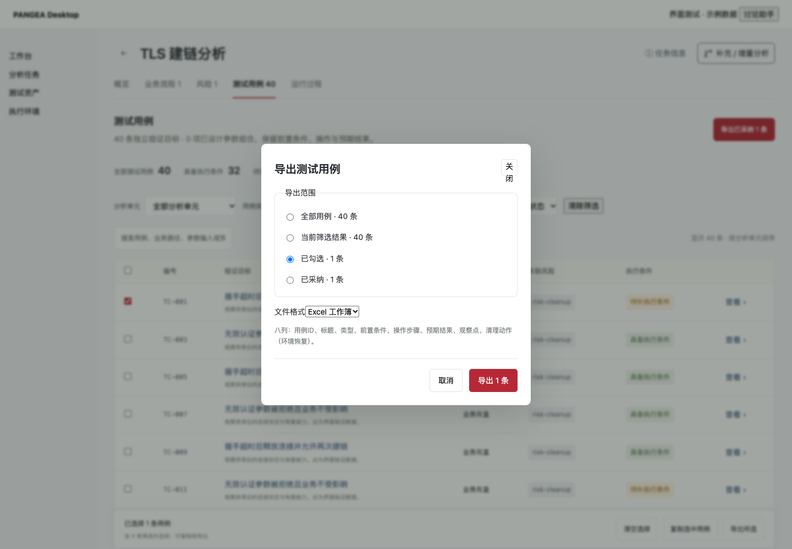
| 导出范围 | 包含的内容 |
|---|---|
| 全部用例 | 当前运行中的全部用例。 |
| 当前筛选结果 | 符合当前筛选条件的用例，包含后续分页中的匹配项。 |
| 已勾选 | 当前勾选的用例。改变筛选条件后，之前勾选的项可能仍被保留。 |
| 已采纳 | 已保存为采纳状态的用例。 |
- 选择范围，核对显示的条数。
- 选择 Excel 工作簿及执行依据 或 CSV及执行依据（ZIP）。
- 点击 导出 N 条，保存文件。
- 打开导出的表格，检查数量、标题和步骤是否符合本次交付需要。
用例主表包含八列：用例ID、标题、类型、前置条件、操作步骤、预期结果、观察点、清理动作（环境恢复）。执行条件与依据另表保存，便于把用例安排与证据核对一起交接。
| 文件格式 | 打开后核对什么 |
|---|---|
| Excel 工作簿及执行依据 | 同一工作簿包含 测试用例 和 执行条件与依据 两张表。按用例身份对应阅读。 |
| CSV及执行依据（ZIP） | 解压后读取 cases.csv、case-evidence.csv 和 manifest.json。清单保留 Run 与用例顺序。 |
依据表保留已声明的执行准备度及原因、测试层级、用途、源码证据、入口和判据等字段。空白表示记录尚未提供；导出不会自动补齐执行设施，也不会把设计状态改成实测通过。
如果页面提示“含 N 条筛选外选择”，说明导出已勾选项时还会包含这些条目。想只导出当前筛选结果，就直接选择对应范围；想重新选择，先点击 清空选择。范围为 0 时，先调整筛选或选择。
保存报告
在结果概览点击 查看分析报告，进入报告页后点击 打开已有报告；也可以从 交付文件 中分别打开 report.html 或 report.md。运行过程页出现 查看报告 时，也能直接打开当前报告。
需要离线阅读或分享时，在报告页的 交付文件 点击 导出离线图文报告（ZIP）。解压整个文件包后打开 report.html，按模块总览阅读各流程的流程图、时序图和函数调用图，以及原文字报告、事实与诊断。包内还包含 report.md、facts.json、manifest.json、diagnostics.json 和可用的 SVG 图；清单用于核对 Run、产物版本和内容校验值。
离线包按导出时的已保存结果生成。缺少图形事实、未完成或存在绘图问题时，会保留原记录和诊断；历史 Run 没有提供的图不会因此补成完整结果。分享前核对未解决事项，并按团队要求检查文件包中的源码和资料内容。
分享时一并说明仓库、分析目标、所用源码版本，以及报告中的未解决事项。测试用例表格和分析报告各有用途：前者便于安排执行，后者保留分析依据、复核情况和交付范围。
补充需求和历史缺陷资料
首次流程走通后，可以加入资料，让后续分析更贴近实际业务。
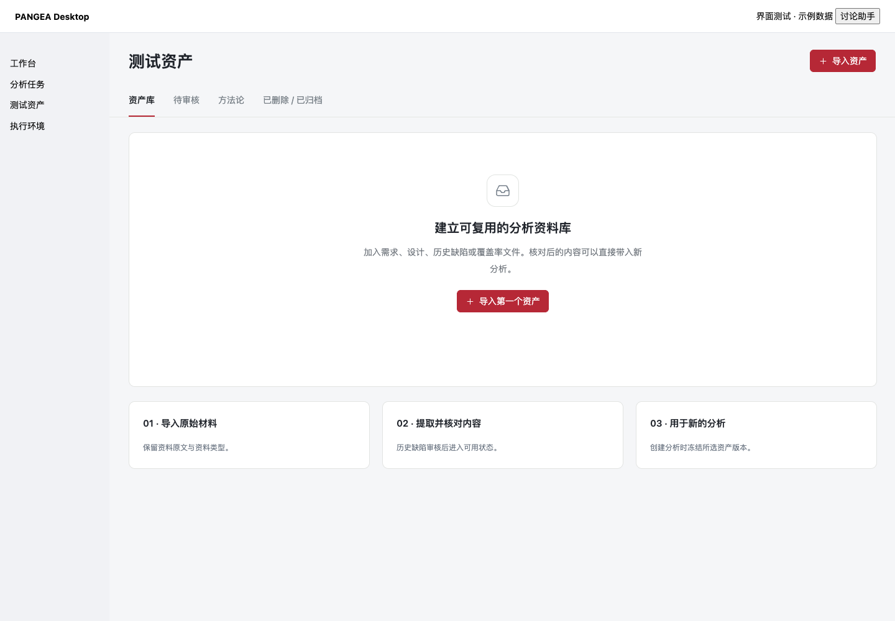
- 打开 测试资产 → 导入资产。
- 选择 一般资料及合适的 资料类型，再点击 选择文件。一般资料支持 Markdown、TXT、PDF、Word 和 Excel；支持一次选择多个文件，同批文件使用相同类型和处理设置，单文件不超过 24 MiB。
- 对需要模型提取的资料，按页面选择处理 Agent 和模型。覆盖率文件由本机解析。
- 检查导入预览和处理设置，点击 导入并处理，等待资料处理完成。
- 打开详情，核对提取内容和原文是否相符。
- 对历史缺陷资料，完成逐条审核或点击 审核通过，使可接受内容进入可用状态。
- 在新建分析的 输入资料 步骤中，选择本次需要的可用资产。
资料显示 等待处理、提取中、待人工审核 时，还需要完成相应处理。已分析但无可用内容时，核对资料分类和原文，再决定是否重新处理。
源码更新后重新分析
原目录更新后，PANGEA 中的已导入副本和旧 Run 仍保留原来的内容。第一次处理版本更新时，采用 新版本、新仓库名称、新任务 的方式，便于把结果与源码对应起来。
- 在 PANGEA 外准备更新后的源码目录，确认它就是本次要测试的版本。导入期间保持目录内容稳定。
- 回到工作台，点击 添加仓库 → 选择文件夹，选择更新后的原始目录。
- 将 仓库名称 改成新的名称，例如
storage-20261022或团队交付版本名storage-R2。已有同名仓库会被拒绝，旧副本保持原样。日期只帮助识别，实际版本要在冻结清单中核对。 - 核对页面 目标位置，点击 添加仓库，等待新名称出现在列表。
- 点击 新建分析，选择新仓库，重新检查目标、目标类型、源码冻结范围和资料版本，再次 预览命中文件。新增或移动文件可能改变范围。
- 创建后，打开 运行过程 → 02 分析单元划分 → 阶段任务 → 阶段产物 → 冻结源码清单（source-manifest.json）。准备阶段尚未完成时，清单可能还没生成。
- 得到新报告后，用新仓库名称和新 Run 编号分享结果，并重新评审适用的用例。
在冻结清单里核对版本
找到 repositories 中对应的 repo_id，再核对 git 字段：
| 字段 | 怎样理解和核对 |
|---|---|
git.commit |
本次记录的完整 Git 提交号，应与准备导入的版本一致。 |
git.branch |
当时的分支名。同一分支会继续变化，不能只凭分支名认定版本相同。 |
git.dirty |
true 表示副本中含未提交修改或未跟踪文件。此时提交号不能单独描述全部输入，以 Run 保存的文件为准。 |
git.is_git: false、version_status: "unversioned" |
导入的是普通目录，没有 Git 提交号。保留交付版本说明和原始源码包，记录仓库名称、Run 编号及本次范围。 |
如果你使用 Git，但不知道原目录的提交号，可在 Windows PowerShell 中运行以下只读命令；路径替换成自己的源码目录：
git -C "D:\Code\storage" rev-parse HEAD
git -C "D:\Code\storage" status --short
第一条输出完整提交号，第二条有内容表示工作目录还有变化。两条命令不会更新源码。任务信息抽屉可以查看仓库、Run 和范围；Git 提交号请以冻结源码清单为准。
何时使用补充或增量分析
任务页的 补充 / 增量分析 会打开 基于此结果继续分析：
- 定向补充使用原 Run 冻结的源码和资料，适合补问同一版本的问题。
- 按变更文件分析读取当前工作区内同一个仓库的文件，与旧 Run 比较。它本身不更新源码。仅在维护者已经更新该工作区副本、且能明确列出新增、修改、删除文件时使用。
原 Run 需要已完成或已停止，冻结输入和结果仍可读取。按上面“新名称重新导入”的方式更新源码后，直接新建任务即可。旧报告中的采纳记录属于旧版评审，需要在新版重新核对。
按现象排查问题
先记下所在页面、完整错误文字、发生时间、任务与 Run 编号，再按下面的分支处理。“重试读取”只刷新页面数据；“继续分析”会恢复任务执行，二者用途不同。
找不到执行器
现象： 创建页提示“所选外部 Agent 尚未加载”或“未找到命令”。打开 Agent Runtime → 高级启动设置与诊断，查看命令解析和绝对路径。
- 在 PowerShell 执行
Get-Command -CommandType Application opencode。也找不到时，回到执行器安装步骤处理安装或 PATH，随后重新打开 PowerShell。 - PowerShell 能找到，但 Desktop 路径为空或仍是旧路径时，重新启动 Desktop；自定义安装则填写实际
.exe/.cmd路径与参数acp，保存后在无运行任务时重启 Harness。 - 命令能找到，但
opencode.cmd acp --help不存在时，检查安装代际和版本。不要反复创建分析来测试命令是否可用。
恢复标志： 执行器已加载，刷新模型成功，具体模型可选且得到确认。仍失败时提供 Desktop 版本、执行器版本、命令解析结果、隐藏用户名后的路径和错误摘要。
模型与网络问题
在哪里看： 创建页 Agent 模型下方的提示；已启动任务则看 运行过程 → 运行信息 → 启动诊断，以及 执行详情与 Agent 会话 → Agent 会话管理。需要更完整信息时打开页面提供的 完整诊断。
| 诊断中看到什么 | 优先区分哪种原因 |
|---|---|
| 原选择的模型已不在当前列表中 | 模型目录发生变化，重新选择实际可用的模型。 |
| Agent 未返回可用模型 | 先执行 opencode.cmd models；自定义网关核对供应商 ID、模型 ID 和配置位置。空列表不能用一个未经确认的默认模型跳过。 |
实际错误含 401、403、unauthorized |
核对当前登录凭据与该模型的访问权限。 |
| 实际错误含 DNS、连接拒绝、证书或超时 | 分别核对地址解析、服务地址、企业证书、代理与网络。不能仅凭“超时”认定账号失效。 |
修复后，用同一个模型执行前文的短请求。若执行器自身仍报错，先继续处理该错误。短请求成功后回创建页 刷新模型，确认具体 ID。
已有 Run 时，先确认它的执行状态。只有页面提供可用的 继续分析 / 继续修正，且没有“旧工具仍可能运行”的阻塞，才在原 Run 继续。恢复标志： 模型请求恢复、页面确认模型，并且原 Run 出现新的事件或产物。仍失败时附时间、Agent 与模型 ID、错误摘要及 Run 编号；不要附完整认证文件。
源码命中为零或提示范围变化
在哪里看： 新建分析的 分析目标 → 预览命中文件。
命中为 0 时，先核对当前选中的仓库。路径相对仓库根目录填写，例如 tls/，不要填另一台电脑的路径。用 选择目录或文件查看实际目录，再预览。当前支持 C/C++ 与 Lua；目录展开还有默认排除规则，不能用资源管理器里“目录有文件”代替预览结果。若目录都是其他语言或被排除的文件，扩大同一个路径也不会自动变成可分析范围。
提示范围已经变化时，说明创建所用文件集合与上次预览不一致。重新预览，重点核对新增、移动或删除的文件，然后再创建。
恢复标志： 清单中出现预期入口、状态判断与清理实现，命中数大于 0，下一步可点击。仍不行时提供仓库名、源码冻结范围文本、预览错误和预期文件的相对路径。
页面显示上次结果或资料暂不可读
现象： 运行过程顶部提示 同步失败，正在显示上次结果，并显示“最后成功读取于 …”。这是页面读取失败，后台是否仍在分析需要重新确认。
点击 重试读取。这只重新读取状态，不重新派发分析。看到最近同步时间更新、警告消失、当前阶段恢复显示，才说明页面读取恢复。持续失败时保留最后成功时间、Run 编号和错误文字，不用新建同任务替代读取恢复。
若提示 部分运行资料暂不可读取，记录具体产物名称，再重试读取。资料恢复后才能使用其中的数量或结论；读不到风险列表不能解释成“0 个风险”。持续失败时提交具体文件名与错误，保留原 Run 文件。
工具结束状态未确认
现象： 显示 等待工具确认、工具结束状态未确认或“原 ACP 请求或工具仍可能运行”。这表示某个工具可能已经执行，但系统尚未获得可靠的结束通知。pending 不证明工具没有执行；Agent 回合结束也不证明工具成功。
- 打开 执行详情与 Agent 会话 → Agent 会话管理，进入对应单元/会话，查看 工具结束确认诊断。核对尚无结束确认的数量、工具 ID、最后更新时间以及
pending / in_progress / unknown状态。 - 展开 运行信息 → 启动诊断，查看请求、会话、最近工具、未结束工具数和进程退出信息。留意“旧执行已停止，核对保存结果”“检查已保存结果”“恢复原会话”等事件。
- 如果仍提示“旧执行进程树停止尚未确认”“原请求或工具仍可能运行”或 暂不能继续，保留原 Run，等待延迟确认或交由维护者检查。此时不要重复创建同任务、删除记录、手动重放工具命令或批量结束 Agent 进程。仅看到一个根进程退出还不够。
- 只有诊断已明确确认原回合及工具结束，或旧执行的整个进程树已停止，并且页面 继续分析 / 继续修正可点击时，才续接原 Run。提示可能是“原回合与工具均已确认结束，可继续原会话”，也可能是“已确认旧执行进程树停止；保留原工具记录，正在核对已保存结果”等。如果自动恢复已经推进，继续观察即可。
- 核对恢复结果：同一 Run 保留已有产物，出现新的完成记录、已接受单元或进入下一阶段。旧工具记录会保留，不以它从列表消失作为成功标准。
当前版本对 CodeAgent 的特定情况可自动尝试一次恢复：先确认整个受管进程树已停止，核对保存结果，再续接原会话未完成部分。这不是所有执行器都有的通用重试。若仍缺结束确认、保存结果不可读或提示不支持恢复，带诊断联系维护者。
仍无法恢复时： 展开 完整工具诊断 JSON（可复制），点击 复制工具诊断；附启动诊断以及页面提供的完整诊断文件。说明是否曾点击停止或继续，保留操作时间。
交给维护者的信息
按以下清单提交即可定位到具体运行：
- Desktop 当前版本及组件提交、执行器版本、实际模型 ID。
- task / Run 编号、发生时间、错误原文、你刚做的操作。
- 工具确认问题另附 action、remote session、request ID 和工具诊断 JSON。
- 页面读取问题附最后成功同步时间；范围问题附相对路径与预览结果。
发送前移除 API Key、Authorization、Cookie、代理密码及无关源码正文。保留原始文件在本机，分享脱敏副本；这些诊断 ID 和时间应保留，便于关联事件。
升级和保留数据
日常升级可从 设置 → 版本与升级 导入团队提供的原始签名 ZIP。升级包无需提前解压。
- 先让正在运行或排队的分析、资料处理等任务完成或确认停止。
- 导入升级包，等待校验，核对目标版本。
- 点击 安装并重启，等待应用重新打开。
- 回到工作台，确认任务和历史结果仍可读取。
补丁包要求当前安装版本与它的基线匹配。当前升级入口要求源版本至少为 2.0.20。若提示版本不匹配，使用适用的完整包；若为 2.0.19 或更早版本，在独立目录安装完整包并保留旧目录及用户数据。独立安装有独立的工作区，不能假定新程序会自动显示旧任务。
当前受支持的应用内升级会复制 launch-root 等用户目录，再切换程序目录。升级完成后仍需核对仓库列表、历史任务和报告。手动重新解压完整包时，完整保留旧安装目录中的 launch-root 与 %APPDATA%\pangea-desktop，在确认数据迁移和历史结果可读前不要删除旧目录。
第一次使用完成检查
完成以下几项后，你已经走通一次从源码到测试设计的基本流程：
- 已添加正确的源码仓库，并预览确认分析范围。
- 已选择可用的执行器和具体模型，成功创建任务。
- 已查看运行状态，处理或明确保留需要关注的事项。
- 已阅读流程、风险或相关证据，以及本次交付报告。
- 已评审至少一条用例，并按明确范围导出表格。
- 已区分分析结论、人工采纳决定和实际测试执行结果。
接下来，可以扩大模块范围、加入需求和历史缺陷资料，或在准备好执行环境后安排测试执行。
版本与资料依据
本版操作文字对应以下源码快照及组件锁定。分支会继续更新；复核按钮或行为时，请使用固定提交。
| 部件 | 固定提交 |
|---|---|
| PANGEA Desktop | 2d25e7f6200a4e8149afa2a5298a3e1612aecfaf |
| 工作台插件 dsh-pangea | 79175f1ae2e5b646cce1529384b6bd9ac50c64fb |
| 分析引擎 pangea-agent | 58e3be11f1607336ee4a0e54b2e9edb5c4b55efc |
界面配图仍保留 Desktop a23cd31、工作台 7cc5179、引擎 7aa7abc 的页面样例，便于对照历史版本。历史真实案例保持原 Run、原源码与原状态，不因本次操作说明更新而改变。
先对照自己安装的产品。 打开 设置 → 版本与升级，记录“当前版本”。在程序安装目录中，用记事本只读打开 resources\update\pangea-package-manifest.json，核对 version、channel 和 components；也可查看 resources\pangea-manifest.json 中的组件信息。保留这些文件原样。
stable表示正式包通道；test表示测试包通道，测试包版本格式带有-test.<序号>.<提交短标识>。- 当前文档核对的是上述源码快照。具体安装包是否已包含这些功能，以该包的组件清单为准。
- 仓库
package.json的版本字段为1.0.4；打包脚本允许指定发行版本，因此不能用这个字段推断你安装的产品版本。
遇到按钮名称或页面结构不同，先核对版本和组件，再使用匹配的指南或升级包。文档包内的 source-record.json 保存来源与图片校验记录，方便 Wiki 维护者更新。